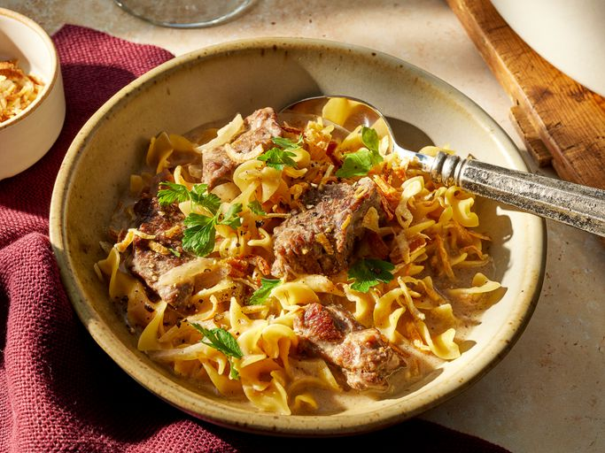

French Onion Beef Noodle Soup

Description
This French onion beef and noodle dish tastes like an onion-y beef stroganoff topped with tasty fried onions. It's fancy enough for adults but very approachable for littles, too.
Ingridients
- 2 tablespoons vegetable oil, divided
- 1 pound beef stew meat
- 1 1/2 cups thinly sliced sweet onion
- 2 cloves garlic, minced
- 1 (32 ounce) carton lower sodium beef broth
- 1 (10 1/2-ounce) can condensed French onion soup
- 1/2 teaspoon freshly ground black pepper
- 2/3 cup sour cream
- 1/3 cup grated Parmesan cheese
- 1 (12-ounce) package wide or medium egg noodles
- 1 (2.8-ounce) can French-fried onions
- 2 tablespoons chopped fresh parsley
Instructions
- Heat 1 tablespoon oil in a 4- to 5-quart Dutch oven over medium-high heat. Add beef stew meat. Cook until well-browned on all sides, stirring once or twice, 2 to 3 minutes. Transfer meat from Dutch oven to a plate.
- Add remaining 1 tablespoon oil to the Dutch oven. Add onion and garlic. Cook over medium heat until tender and starting to brown, stirring frequently, about 6 minutes. If needed, add a splash of broth to the Dutch oven. Scrape up any browned bits from the bottom of the Dutch oven with a wooden spoon.
- Return beef to the Dutch oven. Add remaining broth, soup, and pepper. Bring to a boil. Reduce heat and simmer, covered, 25 to 30 minutes or until meat is tender
- Whisk together sour cream and Parmesan cheese in a small bowl.
- Add about 1/2 cup of hot broth mixture from the Dutch oven to the bowl. Stir to combine.
- Add mixture back to the pot and stir to combine.
- Add egg noodles to the pot. Cover and simmer, stirring occasionally, 5 to 7 minutes or until noodles and beef are tender.
- Top servings with French-fried onions and parsley.